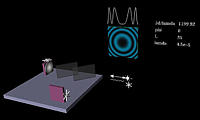
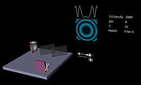
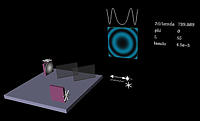
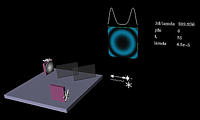
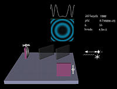
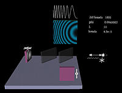
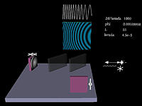

Still pictures from the Interference TOP module
(Michelson Interferometer)
Note: Click on the thumbnails to see the full-sized images.
|
 The path length difference is 1200 wavelengths and the tilt mirror is not tilted. |
 The path length difference is 1000 wavelengths and the tilt mirror is not tilted. |
|
 The path length difference is 800 wavelengths and the tilt mirror is not tilted. |
 The path length difference is 600 wavelengths and the tilt mirror is not tilted. |
|
 The path length difference is 1000 wavelengths and the tilt mirror is not tilted. |
 The path length difference is 1000 wavelengths and the tilt mirror is tilted by 0.002 rad. |
|
 The path length difference is 1000 wavelengths and the tilt mirror is tilted by 0.004 rad. |
 The path length difference is 1000 wavelengths and the tilt mirror is tilted by 0.006 rad. |
 The path length difference is 1000 wavelengths and the tilt mirror is tilted by 0.008 rad. |
{kind=link}
{kind=link}
{kind=link}
{kind=link}
{kind=link}
{kind=link}
{kind=link}

Created
by Srihari Angaluri and Kiril N Vidimce
Send comments to comments@webtop.org